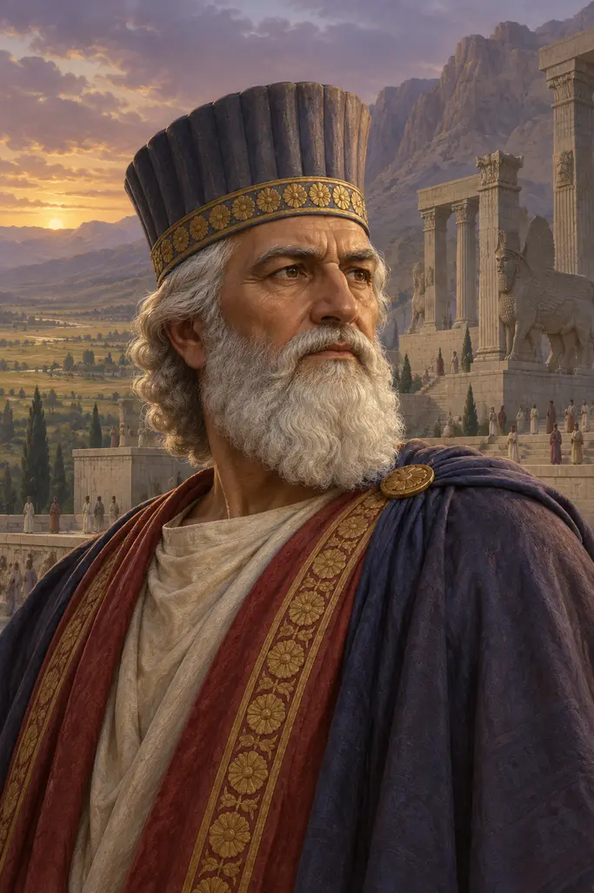
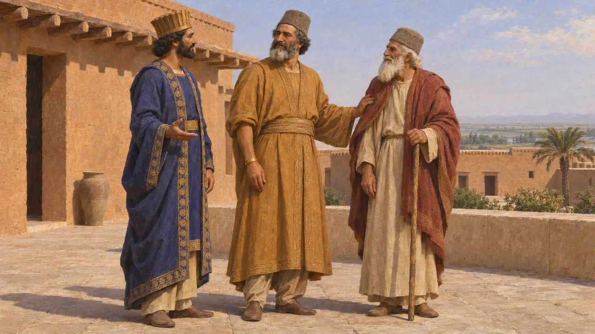
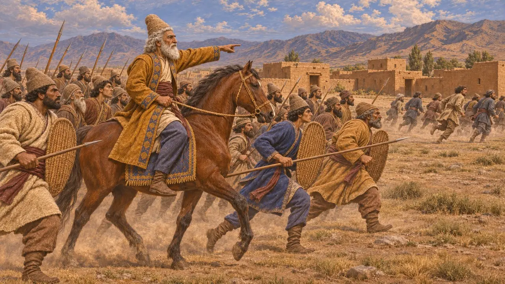
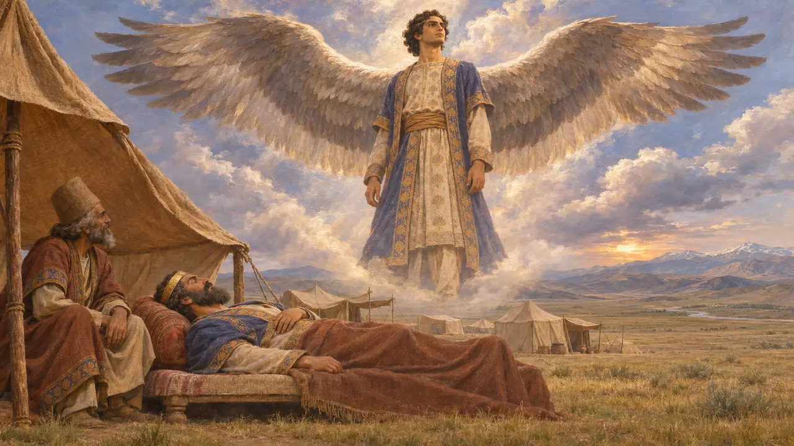
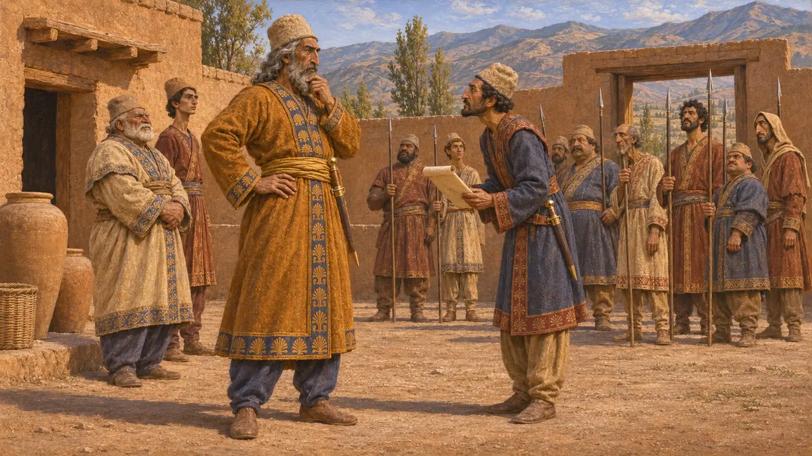
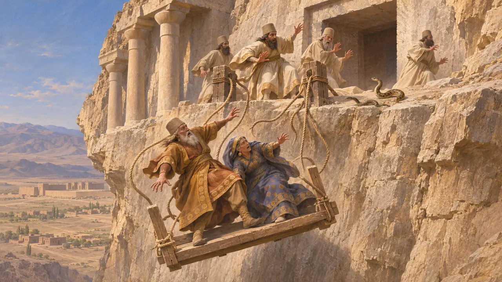

Histaspes
Nobre persa do clã aquemênida e pai de Dario I, século VI AEC
No jogo: Nível 2: O Portador da Lança
Histaspes, em persa antigo Vishtaspa, foi o pai de Dario I e um nobre persa cuja vida atravessou os reinados de Ciro, Cambises e Dario. Dario o nomeou em primeiro lugar em sua genealogia. Em 521, Histaspes liderou a luta contra os rebeldes na Pártia durante as guerras que garantiram o trono de seu filho. Heródoto diz que seu outro filho, Artafernes, governou depois Sardes.
No jogo: A nota da crônica do jogo diz que ele governou a Pártia sob Dario. Behistun apenas o situa na Pártia comandando tropas em 521 e não lhe atribui título algum, e Heródoto o chama de governador na Pérsis em 522.

Seu lugar na linhagem de Dario
Nos registrosNo início da inscrição de Behistun, Dario se apresenta como filho de Vishtaspa, filho de Arshama (Ársames), filho de Ariyaramna, filho de Chishpish, filho de Hakhamanish (Aquêmenes). Histaspes nunca é chamado de rei. Numa carta de fundação de Susa, Dario afirma que seu pai e seu avô Ársames ainda estavam vivos quando Ahuramazda o fez rei.
DB §1-2; DSf

Combatendo os rebeldes na Pártia
Nos registrosBehistun registra que a Pártia e a Hircânia se juntaram ao rebelde medo Fravartish em 521. Histaspes estava na Pártia, e o povo de lá se voltou contra ele. Ele combateu os rebeldes em Vishpauzatish. Dario então lhe enviou um exército persa de Raga, e ele os derrotou novamente em Patigrabana, pondo fim à revolta naquela região.
DB §35-37

O sonho de Ciro com Dario alado
Lenda posteriorHeródoto conta que Histaspes, filho de Arsames, marchou com Ciro contra os masságetas. Ciro sonhou que o jovem Dario tinha asas que cobriam de sombra a Ásia e a Europa, e tomou isso como sinal de uma conspiração. Mandou Histaspes de volta à Pérsia para manter o filho sob guarda até o retorno do Rei. Heródoto acrescenta que o sonho, na verdade, prenunciava a morte do próprio Ciro. Parece uma profecia moldada depois que Dario chegou ao poder.
Herodotus 1.209-210

Que cargo ele ocupava
DisputadoHeródoto conta que, em 522, Histaspes era governador dos persas, isto é, da Pérsis, quando Dario foi a Susa juntar-se aos conspiradores. Behistun o mostra na Pártia um ano depois, mas não lhe dá título. Muitos historiadores acham que ele governava a Pártia e a Hircânia, enquanto outros o veem apenas como um comandante ali. Alguns também questionam o grau de parentesco entre o ramo de Dario e o de Ciro, e acham que o ancestral comum, Aquêmenes, foi enfatizado para reforçar a pretensão do novo rei.
Herodotus 3.70; DB §35; P. Briant, From Cyrus to Alexander, 2002

Uma morte no túmulo real
Lenda posteriorCtésias, escrevendo cerca de um século depois, diz que os pais de Dario quiseram ver o túmulo que estava sendo escavado na rocha para o Rei. Os sacerdotes que os içavam pelo penhasco se assustaram com serpentes e soltaram as cordas, e ambos morreram. Nenhuma fonte persa confirma a história, e Ctésias costuma ser pouco confiável.
Ctesias, Persica (epitome of Photius)
Fontes
- Darius I, Behistun inscription (DB)
- Darius I, Susa foundation charter (DSf)
- Herodotus, Histories 1.209-210; 3.70; 5.25
- Ctesias, Persica (epitome of Photius)
- P. Briant, From Cyrus to Alexander, 2002
- R. Schmitt, The Bisitun Inscriptions of Darius the Great: Old Persian Text, 1991